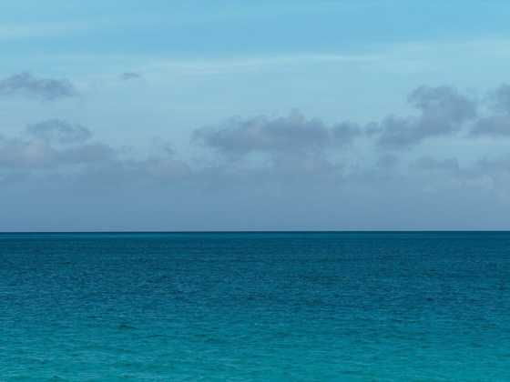

写真はフリー素材のイメージで、店舗の実際の様子ではありません。
お店のこと
ABOUT
兵庫県加古川市、加古川市役所の近くのビルの2階にあるカフェです。店名の「toukokuu」はフィンランド語で「5月」を意味すると、複数の紹介ページで伝えられています。
入口には静かにお過ごしいただくためのお願いが掲げられていると紹介されており、ひとりで本を読んだり、お茶を飲みながら物思いにふけったりする方に選ばれているようです。北欧風の雑貨が棚に並ぶ、落ち着いた空間です。
なぜ「5月」なのか、店主の想いは公開情報からは確認できていません。このページの色づかい(新緑の5月)は制作側のイメージです。

メニュー
MENU

ケーキセットなどの甘いものが中心と紹介されています。Instagramでは日替わりのスイーツが投稿されることがあるようです。ランチはご予約制と案内されています(詳細は準備中)。
価格・内容は準備中です。最新情報はInstagramをご覧ください。





口コミ
VOICE
イメージ例
騒がしくなくて、本を一冊持っていくのにちょうどいい場所でした。ケーキと紅茶でゆっくりできました。
イメージ例
窓の外の明るさを眺めながら、静かに過ごせました。ひとりでも入りやすかったです。
イメージ例
雑貨を眺めるのも楽しく、また季節のスイーツを食べに来たいと思いました。
上記は制作側が作成したイメージ例で、実在のお客様の声ではありません。
アクセス
ACCESS
〒675-0031 兵庫県加古川市加古川町北在家2441-1(ビル2階と紹介されています)
電話: 準備中 / 営業時間・定休日: 準備中(最新はInstagramでご確認ください)